0.7 — Compilation de votre premier programme
Avant d'écrire notre premier programme, nous devons apprendre à créer de nouveaux programmes dans votre environnement de développement intégré (IDE). Dans cette leçon, nous verrons comment faire, et vous compilerez et exécuterez votre tout premier programme !
Projets
Pour écrire un programme C++ dans un IDE, on commence généralement par créer un nouveau projet (nous vous montrerons comment faire dans un instant). Un projet est un conteneur qui regroupe tous les fichiers de code source, images, fichiers de données, etc. nécessaires à la production d'un exécutable (ou d'une bibliothèque, d'un site web, etc.) que vous pouvez lancer ou utiliser. Le projet enregistre également divers paramètres de l'IDE, du compilateur et de l'éditeur de liens, ainsi que l'endroit où vous vous étiez arrêté, de sorte que, lorsque vous rouvrez le projet plus tard, l'état de l'IDE puisse être restauré à ce point. Lorsque vous demandez la compilation de votre programme, tous les fichiers .cpp du projet sont compilés puis liés.
Chaque projet correspond à un programme. Lorsque vous êtes prêt à créer un second programme, vous devrez soit créer un nouveau projet, soit écraser le code d'un projet existant (si vous ne souhaitez pas le conserver). Les fichiers de projet sont généralement propres à chaque IDE : un projet créé dans un IDE devra donc être recréé dans un autre.
Bonne pratique
Créez un nouveau projet pour chaque nouveau programme que vous écrivez.
Projets console
Lorsque vous créez un nouveau projet, on vous demande généralement quel type de projet vous souhaitez créer. Tous les projets que nous créerons dans ce tutoriel seront des projets console. Un projet console signifie que nous allons créer des programmes pouvant être lancés depuis la console Windows, Linux ou Mac.
Voici une capture d'écran de la console Windows :
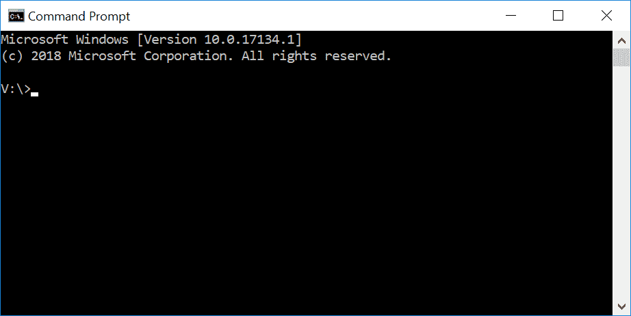
Par défaut, les applications console n'ont pas d'interface graphique (GUI) : elles affichent du texte dans la console, lisent les saisies au clavier et sont compilées en fichiers exécutables autonomes. C'est idéal pour apprendre le C++, car cela limite la complexité et garantit que les programmes fonctionnent sur une grande variété de systèmes.
Ne vous inquiétez pas si vous n'avez jamais utilisé de console ou si vous ne savez pas y accéder. Nous compilerons et lancerons nos programmes depuis nos IDE (qui ouvriront la console si nécessaire).
Espaces de travail / solutions
Lorsque vous créez un nouveau projet pour votre programme, de nombreux IDE ajoutent automatiquement votre projet à un « espace de travail » (workspace) ou une « solution » (le terme varie selon l'IDE). Un espace de travail ou une solution est un conteneur pouvant regrouper un ou plusieurs projets liés. Par exemple, si vous écriviez un jeu et souhaitiez disposer d'un exécutable distinct pour le mode solo et le mode multijoueur, il vous faudrait créer deux projets. Il ne serait pas logique que ces deux projets soient totalement indépendants : après tout, ils font partie du même jeu. Le plus probable est que chacun soit configuré comme un projet distinct au sein d'un même espace de travail/solution.
Bien que vous puissiez ajouter plusieurs projets à une même solution, nous vous recommandons généralement de créer un nouvel espace de travail ou une nouvelle solution pour chaque programme, surtout pendant l'apprentissage. C'est plus simple, et il y a moins de risques que quelque chose se passe mal.
Écrire votre premier programme
Traditionnellement, le premier programme qu'écrivent les programmeurs dans un nouveau langage est le célèbre programme « Hello, world! », et nous n'allons pas vous priver de cette expérience ! Vous nous remercierez plus tard. Peut-être.
Créer un projet dans Visual Studio 2019 (ou plus récent)
Lorsque vous lancez Visual Studio 2019 (ou plus récent), vous devriez voir une boîte de dialogue qui ressemble à ceci :
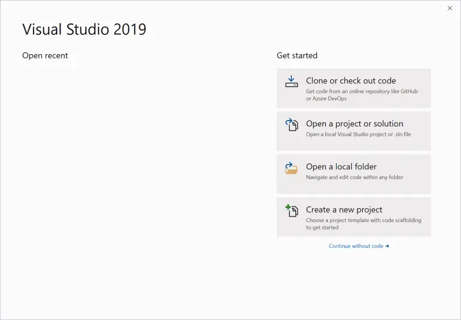
Sélectionnez Créer un projet.
Vous verrez alors une boîte de dialogue qui ressemble à ceci :
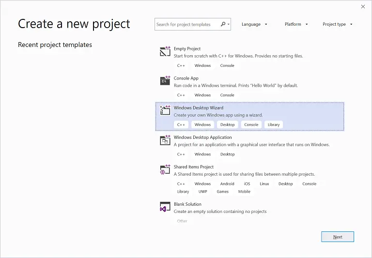
Si vous avez déjà ouvert un projet précédemment, vous pouvez accéder à cette boîte de dialogue via le menu Fichier > Nouveau > Projet.
Sélectionnez Assistant Bureau Windows puis cliquez sur Suivant. Si vous ne voyez pas cette option, c'est sans doute que vous n'avez pas choisi d'installer la charge de travail Développement desktop en C++ lors de l'installation de Visual Studio. Dans ce cas, revenez à la leçon 0.6 -- Installation d'un environnement de développement intégré (IDE) et réinstallez Visual Studio comme indiqué (remarque : plutôt que de tout réinstaller, vous pouvez lancer le programme d'installation de Visual Studio et modifier votre installation existante pour ajouter la charge de travail C++).
Vous verrez ensuite une boîte de dialogue qui ressemble à ceci :
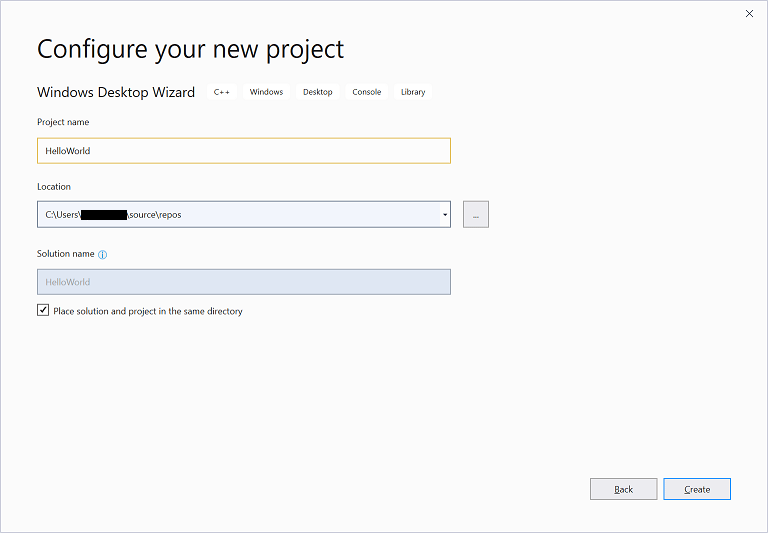
Remplacez le nom de projet existant par HelloWorld.
Il est recommandé de cocher également Placer la solution et le projet dans le même répertoire, car cela réduit le nombre de sous-répertoires créés pour chaque projet.
Cliquez sur Créer pour continuer.
Enfin, vous verrez une dernière boîte de dialogue :
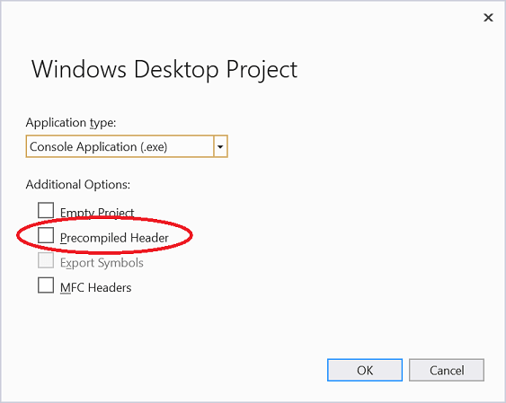
Vérifiez que le Type d'application est défini sur Application console (.exe) et que l'option En-tête précompilé n'est pas cochée. Cliquez ensuite sur OK.
Vous venez de créer un projet ! Descendez jusqu'à la section Explorateur de solutions Visual Studio ci-dessous pour continuer.
Q : Que sont les en-têtes précompilés et pourquoi les désactivons-nous ?
Dans les grands projets (ceux comportant de nombreux fichiers de code), les en-têtes précompilés peuvent améliorer la vitesse de compilation en évitant une partie de la recompilation redondante qui survient fréquemment dans ces projets.
Cependant, les en-têtes précompilés demandent un travail supplémentaire pour être utilisés, et pour les petits projets (comme ceux que vous créerez dans nos tutoriels), ils ne changent pratiquement rien aux temps de compilation.
Pour cette raison, nous recommandons de désactiver les en-têtes précompilés au départ, et de ne les activer plus tard que si vous constatez que vos temps de compilation deviennent gênants.
Créer un projet dans Visual Studio 2017 ou plus ancien
Pour créer un nouveau projet dans Visual Studio 2017 ou plus ancien, allez dans le menu Fichier > Nouveau > Projet. Une boîte de dialogue ressemblant à ceci apparaît :
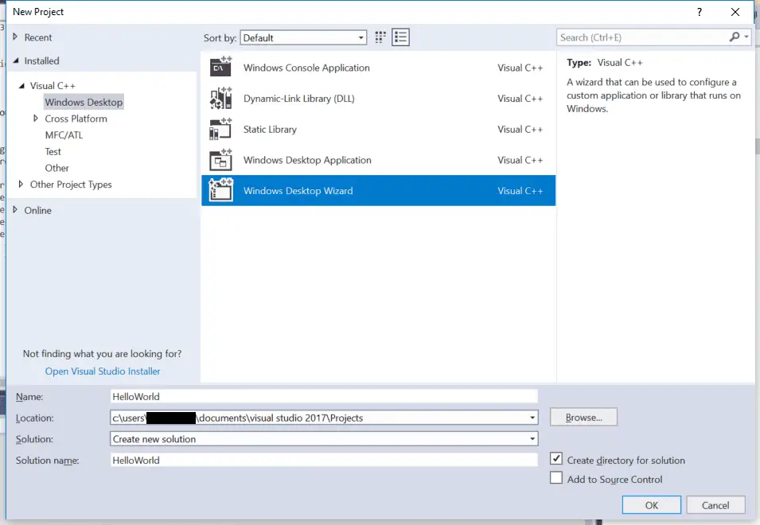
Vérifiez d'abord que Visual C++ figure dans la partie gauche. Si vous ne voyez pas Visual C++, c'est sans doute que vous n'avez pas choisi d'installer la charge de travail Développement desktop en C++ lors de l'installation de Visual Studio. Dans ce cas, revenez à la leçon 0.6 -- Installation d'un environnement de développement intégré (IDE) et réinstallez Visual Studio comme indiqué (remarque : plutôt que de tout réinstaller, vous pouvez lancer le programme d'installation de Visual Studio et modifier votre installation existante pour ajouter la charge de travail C++).
Si vous utilisez Visual Studio 2017 v15.3 ou plus récent, sous Visual C++, sélectionnez Bureau Windows, puis Assistant Bureau Windows dans la fenêtre principale.
Si vous ne voyez pas Bureau Windows parmi les options, vous utilisez probablement une version plus ancienne de Visual Studio. Ce n'est pas grave. Choisissez alors Win32, puis Application console Win32 dans la fenêtre principale.
En bas, dans le champ Nom, saisissez le nom de votre programme (remplacez le nom existant par HelloWorld). Dans le champ Emplacement, vous pouvez éventuellement choisir un autre emplacement pour votre projet. Le paramètre par défaut convient pour le moment.
Cliquez sur OK. Si vous utilisez une ancienne version de Visual Studio, l'assistant d'application Win32 se lance. Appuyez sur Suivant.
Vous devriez voir à ce stade un assistant qui ressemble à ceci (les anciennes versions de Visual Studio utilisent un style différent, mais proposent la plupart des mêmes options) :
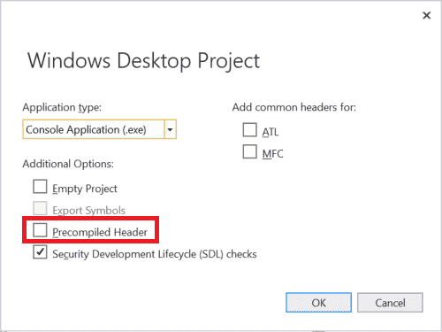
Veillez à décocher En-tête précompilé.
Cliquez ensuite sur OK ou Terminer. Votre projet est maintenant créé !
Explorateur de solutions Visual Studio
Sur le côté gauche ou droit de la fenêtre, vous devriez voir une fenêtre intitulée Explorateur de solutions. Dans cette fenêtre, Visual Studio a créé une solution pour vous (Solution 'HelloWorld'). En dessous, en gras, figure votre nouveau projet (HelloWorld). Dans ce projet, Visual Studio a créé plusieurs fichiers, dont HelloWorld.cpp (sous l'élément Fichiers sources). Vous verrez peut-être aussi d'autres fichiers .cpp ou .h, que vous pouvez ignorer pour le moment.
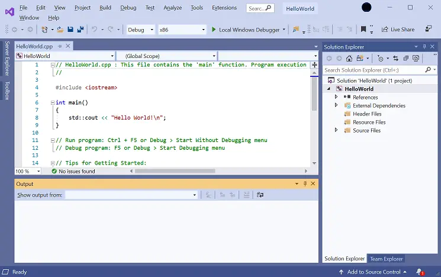
Dans l'éditeur de texte, vous verrez que Visual Studio a déjà ouvert HelloWorld.cpp et créé du code pour vous. Sélectionnez et supprimez tout le code, puis saisissez ou copiez le code suivant dans votre IDE :
#include <iostream>
int main()
{
std::cout << "Hello, world!";
return 0;
}
Pour compiler votre programme, appuyez sur F7 (si cela ne fonctionne pas, essayez Ctrl-Maj-B) ou allez dans le menu Générer > Générer la solution. Si tout se passe bien, vous devriez voir apparaître le message suivant dans la fenêtre Sortie :
1>------ Début de la génération : projet : HelloWorld, configuration : Debug Win32 ------
1>HelloWorld.cpp
1>HelloWorld.vcxproj -> c:\users\alex\documents\visual studio 2017\Projects\HelloWorld\Debug\HelloWorld.exe
========== Génération : 1 réussie, 0 échec, 0 à jour, 0 ignorée ==========
Cela signifie que votre compilation a réussi !
Q : J'obtiens l'erreur C1010 (« fatal error C1010: unexpected end of file while looking for precompiled header. Did you forget to add ‘#include "stdafx.h"’ to your source? »). Que faire ?
Vous avez oublié de désactiver les en-têtes précompilés lors de la création de votre projet. Recréez votre projet (selon les instructions ci-dessus) et veillez à désactiver les en-têtes précompilés.
Pour exécuter votre programme compilé, appuyez sur Ctrl-F5 ou allez dans le menu Déboguer et choisissez Démarrer sans débogage. Vous verrez quelque chose de semblable à ceci :
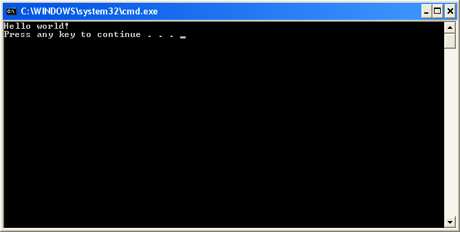
C'est le résultat de votre programme ! Félicitations, vous avez compilé et exécuté votre premier programme !
Contenu associé
Lorsque vous lancez un programme directement depuis Visual Studio, vous pouvez voir une ligne supplémentaire dans la sortie, du type :
C:\Users\Alex\source\repos\Project6\Debug\Project6.exe (process 21896) exited with code 0.
C'est normal. Visual Studio fournit ainsi une information supplémentaire indiquant si votre programme s'est terminé normalement ou anormalement. Nous revenons sur ce point dans la leçon 2.2 -- Valeurs de retour des fonctions (fonctions renvoyant une valeur).
Créer un projet dans Code::Blocks
Pour créer un nouveau projet, allez dans le menu Fichier > Nouveau > Projet. Une boîte de dialogue ressemblant à ceci apparaît :
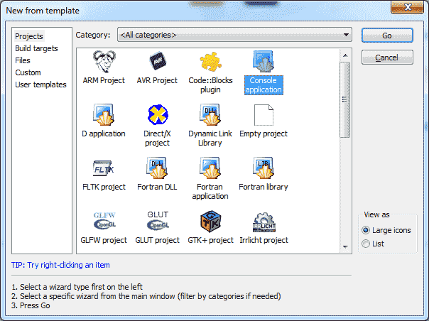
Sélectionnez Console application puis appuyez sur le bouton Go (ou Create).
Si un assistant d'application console apparaît, appuyez sur Next, vérifiez que C++ est sélectionné, puis appuyez de nouveau sur Next.
On vous demande ensuite de nommer votre projet. Intitulez-le HelloWorld. Vous pouvez l'enregistrer où vous le souhaitez. Sous Windows, nous vous recommandons de l'enregistrer dans un sous-répertoire du disque C, par exemple C:\CBProjects.
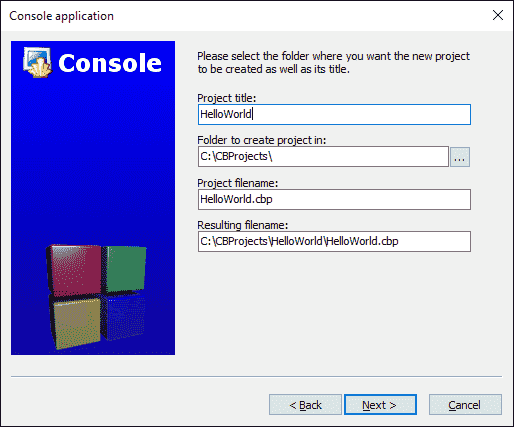
Une autre boîte de dialogue peut vous demander quelles configurations activer. Les valeurs par défaut conviennent ici, sélectionnez donc Finish.
Votre nouveau projet est maintenant créé.
Sur le côté gauche de l'écran, vous devriez voir une fenêtre Management, avec l'onglet Projects sélectionné. Dans cette fenêtre, vous verrez un dossier Workspace contenant votre projet HelloWorld :
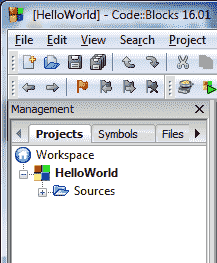
Dans le projet HelloWorld, développez le dossier Sources et double-cliquez sur « main.cpp ». Vous verrez qu'un programme Hello World a déjà été écrit pour vous !
Remplacez-le par le code suivant :
#include <iostream>
int main()
{
std::cout << "Hello, world!";
return 0;
}
Pour générer votre projet, appuyez sur Ctrl-F9 ou allez dans le menu Build > Build. Si tout se passe bien, vous devriez voir apparaître le message suivant dans la fenêtre du journal de génération :
-------------- Build: Debug in HelloWorld (compiler: GNU GCC Compiler)---------------
mingw32-g++.exe -Wall -fexceptions -g -std=c++14 -c C:\CBProjects\HelloWorld\main.cpp -o obj\Debug\main.o
mingw32-g++.exe -o bin\Debug\HelloWorld.exe obj\Debug\main.o
Output file is bin\Debug\HelloWorld.exe with size 1.51 MB
Process terminated with status 0 (0 minute(s), 0 second(s))
0 error(s), 0 warning(s) (0 minute(s), 0 second(s))
Cela signifie que votre compilation a réussi !
Pour exécuter votre programme compilé, appuyez sur Ctrl-F10 ou allez dans le menu Build > Run. Vous verrez quelque chose de semblable à ceci :
C'est le résultat de votre programme !
Pour les utilisateurs de Linux
Les utilisateurs de Linux devront peut-être installer des paquets supplémentaires avant que Code::Blocks puisse compiler. Consultez les instructions d'installation de Code::Blocks dans la leçon 0.6 -- Installation d'un environnement de développement intégré (IDE) pour plus d'informations.
Créer un projet dans VS Code
Pour démarrer un nouveau projet, allez dans le menu Affichage > Explorateur (ou appuyez sur Ctrl-Maj-E). Cela ouvre le volet explorateur. Si vous n'avez pas encore ouvert de projet, vous devriez voir un bouton Ouvrir le dossier dans le volet explorateur : appuyez dessus. Si un projet est déjà ouvert et que vous souhaitez en démarrer un nouveau, choisissez Fichier > Ouvrir le dossier dans la barre de navigation supérieure.
Dans la boîte de dialogue qui s'ouvre, créez un nouveau dossier nommé HelloWorld, puis sélectionnez-le. Ce dossier sera le dossier de votre projet.
Ensuite, nous devons créer le fichier qui contiendra notre code source. Choisissez Fichier > Nouveau fichier dans la barre de navigation supérieure, ou cliquez sur l'icône Nouveau fichier à droite de HELLOWORLD dans le volet explorateur.
Nommez votre fichier main.cpp et ajoutez-y le contenu suivant :
#include <iostream>
int main()
{
std::cout << "Hello, world!";
return 0;
}
Pour compiler main.cpp et exécuter le programme, assurez-vous que main.cpp est ouvert dans le volet principal, puis choisissez Exécuter > Exécuter sans débogage dans la barre de navigation supérieure, ou cliquez sur le v à droite de l'icône de lecture, à droite de l'onglet main.cpp, et choisissez Run C/C++ File.
Ensuite, choisissez l'option g++ build and debug active file (les utilisateurs de macOS doivent choisir clang++ au lieu de g++). Passez de l'onglet DEBUG CONSOLE à l'onglet TERMINAL en bas de la fenêtre.
Si le terminal affiche le texte « Hello, world! », félicitations, vous venez d'exécuter votre premier programme C++ !
Si vous utilisez g++ en ligne de commande
Dans ce cas, vous n'avez pas besoin de créer de projet. Collez simplement le code suivant dans un fichier texte nommé HelloWorld.cpp, puis enregistrez-le :
#include <iostream>
int main()
{
std::cout << "Hello, world!";
return 0;
}
Depuis la ligne de commande, tapez :
g++ -o HelloWorld HelloWorld.cpp
Cela compile et lie HelloWorld.cpp. Pour l'exécuter, tapez :
HelloWorld (ou éventuellement ./HelloWorld), et vous verrez la sortie de votre programme.
Si vous utilisez d'autres IDE ou un compilateur en ligne
Vous devrez trouver par vous-même comment effectuer les opérations suivantes :
- Créer un projet console (uniquement pour les IDE)
- Ajouter un fichier .cpp au projet (uniquement pour les IDE, si l'un n'a pas été créé automatiquement)
- Coller le code suivant dans le fichier :
#include <iostream>
int main()
{
std::cout << "Hello, world!";
return 0;
}
- Compiler le projet
- Exécuter le projet
Si la compilation échoue
Ce n'est pas grave, prenez une grande inspiration. Nous pouvons probablement résoudre le problème. :)
D'abord, lisez le message d'erreur donné par le compilateur. Le plus souvent, il indique un numéro de ligne où se situe l'erreur. Examinez cette ligne ainsi que les lignes qui l'entourent, et vérifiez qu'il n'y a ni coquille ni faute de frappe. Assurez-vous également de ne pas avoir recopié les numéros de ligne dans votre code (votre éditeur devrait les afficher lui-même).
Ensuite, consultez les questions-réponses de la leçon 0.8 -- Quelques problèmes courants en C++, car votre problème y est peut-être traité.
Puis, lisez les commentaires situés sous la leçon contenant l'exemple que vous compilez : quelqu'un a peut-être rencontré le même problème et proposé une solution.
Enfin, si tout ce qui précède échoue, essayez de rechercher le message d'erreur dans votre moteur de recherche préféré. Il est probable que quelqu'un d'autre ait déjà rencontré ce problème et trouvé comment le résoudre.
Si votre programme s'exécute mais que la fenêtre de console se ferme immédiatement
Lorsqu'un programme console est lancé, la fenêtre de console s'ouvre et toute sortie du programme y est écrite.
Lorsque le programme a fini de s'exécuter, la plupart des IDE modernes gardent la console ouverte (jusqu'à ce que vous appuyiez sur une touche) afin que vous puissiez examiner les résultats du programme avant de continuer. Cependant, certains anciens IDE ferment automatiquement la fenêtre de console à la fin de l'exécution. Ce n'est généralement pas le comportement souhaité.
Si votre IDE ferme automatiquement la fenêtre de console, les deux étapes suivantes permettent de faire en sorte que la console reste ouverte à la fin du programme.
Premièrement, ajoutez ou vérifiez la présence des lignes suivantes près du début de votre programme :
#include <iostream>
#include <limits>
Deuxièmement, ajoutez le code suivant à la fin de la fonction main() (juste avant l'instruction return) :
std::cin.clear(); // réinitialise les indicateurs d'erreur
std::cin.ignore(std::numeric_limits<std::streamsize>::max(), '\n'); // ignore les caractères du tampon d'entrée jusqu'à trouver un saut de ligne
std::cin.get(); // lit un caractère de plus saisi par l'utilisateur (attend que l'utilisateur appuie sur Entrée)
Cela fera attendre le programme que l'utilisateur appuie sur Entrée avant de continuer (il vous faudra peut-être appuyer deux fois sur Entrée), ce qui vous laissera le temps d'examiner la sortie du programme avant que votre IDE ne ferme la fenêtre de console.
D'autres solutions, comme la solution system("pause") souvent suggérée, ne fonctionnent que sur certains systèmes d'exploitation et doivent être évitées.
Si la fenêtre de console ne s'ouvre pas du tout et que votre programme ne semble pas s'exécuter, votre antivirus ou antimalware bloque peut-être l'exécution du programme. Dans ce cas, essayez de désactiver temporairement vos analyses pour voir si le problème disparaît, ou excluez le répertoire du projet de vos analyses.
Astuce
Si vous utilisez un antivirus ou un antimalware, pensez à exclure le répertoire de votre projet des analyses, car la compilation et le débogage peuvent provoquer de faux positifs.
Quelle est la différence entre les options compile, build, rebuild, clean et run/start de mon IDE ?
Dans la leçon 0.5 -- Introduction au compilateur, à l'éditeur de liens et aux bibliothèques, nous avons montré que, pour produire un exécutable, chaque fichier de code d'un programme est compilé en un fichier objet, puis les fichiers objets sont liés pour former un exécutable.
Lorsqu'un fichier de code est compilé, votre IDE peut mettre en cache (enregistrer) le fichier objet obtenu sur le disque. Un cache (prononcé « kach ») est un emplacement de stockage où sont conservées des données fréquemment consultées afin d'être récupérées rapidement plus tard. Ainsi, si le programme est compilé à nouveau, tout fichier de code non modifié n'a pas besoin d'être recompilé : le fichier objet mis en cache lors de la compilation précédente peut être réutilisé (au lieu d'être régénéré). Cela peut accélérer considérablement les temps de compilation (au prix d'un peu d'espace disque).
Cela étant posé, voici ce que fait généralement chacune des options :
- Build compile tous les fichiers de code modifiés du projet ou de l'espace de travail/solution, puis lie les fichiers objets pour former un exécutable. Si aucun fichier de code n'a été modifié depuis la dernière génération, cette option ne fait rien.
- Clean supprime tous les objets et exécutables mis en cache, de sorte que la prochaine génération du projet recompile tous les fichiers et produise un nouvel exécutable.
- Rebuild effectue un « clean » suivi d'un « build ».
- Compile recompile un seul fichier de code (qu'il ait été mis en cache auparavant ou non). Cette option n'invoque pas l'éditeur de liens et ne produit pas d'exécutable.
- Run/start exécute l'exécutable issu d'une génération précédente. Certains IDE (par exemple Visual Studio) lancent un « build » avant le « run » afin de s'assurer que vous exécutez la version la plus récente de votre code. Dans les autres cas (par exemple Code::Blocks), seul l'exécutable précédent est lancé.
Bien que nous parlions informellement de « compiler » nos programmes, pour les compiler réellement, nous choisirons généralement l'option « build » (ou « run ») de notre IDE.
Conclusion
Félicitations, vous avez franchi la partie la plus difficile de ce tutoriel (installer l'IDE et compiler votre premier programme) !
Ne vous inquiétez pas si vous ne comprenez pas encore ce que fait chaque ligne du programme Hello World. Nous examinerons et expliquerons chaque ligne en détail au début du prochain chapitre.
Source originale : https://www.learncpp.com/cpp-tutorial/compiling-your-first-program/